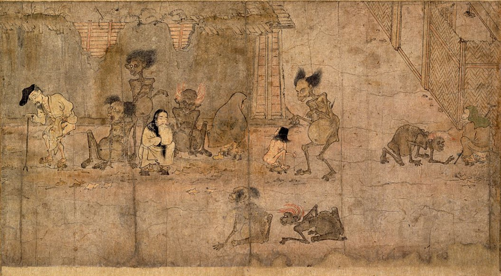
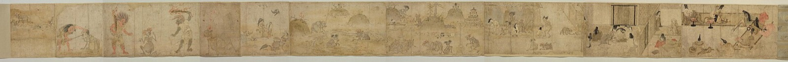

preta · 餓鬼
the hungry ghost realm
"The torture of the hungry ghost realm is not so much the pain of not finding what he wants; rather it is the insatiable hunger itself which causes pain." — Chögyam Trungpa, Cutting Through Spiritual Materialism

the shape of the trap
The inhabitants of the Hungry Ghost Realm are depicted as creatures with scrawny necks, small mouths, emaciated limbs and large, bloated, empty bellies. This is the domain of addiction, where we constantly seek something outside ourselves to curb an insatiable yearning for relief or fulfillment. The aching emptiness is perpetual because the substances, objects or pursuits we hope will soothe it are not what we really need.
— Gabor Maté, In the Realm of Hungry Ghosts
Fundamentally, you feel poor. You are unable to keep up the pretense of being what you would like to be. Whatever you have is used as proof of the validity of your pride, but it is never enough, there is always some sense of inadequacy.
— Chögyam Trungpa, The Myth of Freedom
… the preta or hungry ghost realm concerned with what is lacking or insufficient, and with comparisons to an idealized past and idealized others …
— Martin Lowenthal & Lar Short, Opening the Heart of Compassion
The hungry ghost realm is the world of greed. When you are consumed by greed, you see the world as a desert waste.
— Ken McLeod, Wake Up to Your Life (six realms practice)
These pretas are tormented by extreme hunger and thirst. Centuries pass without their even hearing any mention of water.
— Patrul Rinpoche, The Words of My Perfect Teacher
texture
film · watch this one
Requiem for a Dream — dir. Darren Aronofsky, 2000
It's a reason to get up in the morning. It's a reason to lose weight, to fit in the red dress. It's a reason to smile. It makes tomorrow all right.
— Sara Goldfarb
I'm somebody now, Harry. Everybody likes me.
— Sara Goldfarb · novel by Hubert Selby Jr.
song
Hurt — Johnny Cash, 2002 (written by Trent Reznor)
verse
The Dhammapada — on craving
The craving of one given to heedless living grows like a creeper. Like the monkey seeking fruits in the forest, he leaps from life to life.
— Dhammapada, verse 334 (trans. Buddharakkhita)
speech
This Is Water — David Foster Wallace
If you worship money and things, if they are where you tap real meaning in life, then you will never have enough, never feel you have enough.
— Kenyon commencement address, 2005

the full Tokyo scroll — drag to unroll
{kind=link}
dispatches
From @RomeoStevens76, via the community archive.
The Hungry Ghost Self knows that if awareness isn't contracted, other parts will be aware enough to stop it from cramming in food. If awareness isn't contracted during sex, you'll be aware of unpleasant ways you currently relate to yourself and partner during it, "ruining it"
side note: Common hungry ghost bait is to imply that whatever a person is on about this week is secretly necessary in order to succeed. Since they are the authority on what exactly they mean, they are now an authority over you.
Hungry ghosts tend to surround God realm people, it's not healthy for either side.
the door
This longing you express is the return message. The grief you cry out from draws you toward union.
— Rumi, Love Dogs (trans. Coleman Barks)
But whoever overcomes this wretched craving, so difficult to overcome, from him sorrows fall away like water from a lotus leaf.
— Dhammapada, verse 336 (trans. Buddharakkhita)
The wisdom of seeking outwards and not being content with merely what is given and the sense that more is possible, alongside connection and compassion for those who lack resides in the hungry ghost realm.
even here, a buddha
In the hungry ghost realm the awakened one is called Jvalamukha — "Flaming Mouth" — and he carries a vessel of nectar: nourishment that fits the narrowest throat.
The gates are not locked.
☸ the six realms · may all beings be free